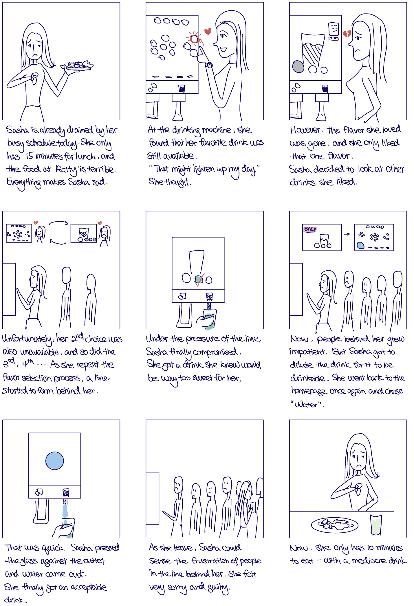

Background
The drink dispensers in Brown University's Sharpe Refactory dining hall
are the go-to places for students and staff looking for a refreshing drink
to quench their thirst or add some flavor to their meals.
However, those drink dispensers have interfaces that can be hard to operate and sometimes bring
frustration to students.
Therefore, I want to understand the exact functionality of the drink dispensers' interface,
and the sore spots for users.
Challenge
I seek to conduct a user research among the students that interact with the drink dispensers' interface,
and learn about their experience. Then, I will analyze the users' feedback and construct personas and storyboard,
which will help to uncover areas of improvement for the interface.
Research
To systematically analyze the usability and issues of drink dispenser's interface,
I start with developing a research methodology, which incolves
understanding the interface, observing users, and interviewing users.
Methodology
- Observe the drink dispenser's interface, document its workflow and functionality
- Perform a preliminary analysis of the interface based on usability principles
- Observe 3 students who interact with one such interface, and note down any commonalities
- Interview the 3 students on their experience interacting with the interface
- Create personas and a storyboard based on the interview responses
Interface Workflow & Analysis
Workflow
The drink dispenser provides various drinks.
Its default home screen shows buttons for water, other drinks, and filter options.
A grey drink button indicates unavailability.
Once a button is pressed, it proceeds to a drink screen that
shows flavor options and calorie information.
After making the final selection,
the user can press their cups against outlets for either ice or drink.
Preliminary Analysis
Learnability
Many options crowded on the homepage,
first-time users under time constraint may not be
able to see the grouping relationship. Based on personal experience, the users
should be able to operate without difficulty after a few times.
Memorability
Shouldn't be an issue as most
users interact with the drink dispenser at least a few times a week.
Usability
The home page doesn't reflect unavailable
flavors and the filter options are very small.
Those can interfere with users' experience.
Observation
After detailed investigation of the interface,
I proceed to observe users of the drink dispenser interface in the dining hall.
I chose three users of seemingly different background,
and I watched them operating the interface from start to end.
Below are the highlights of my observation.
Interview
Based on my study of the interface as well as my observation of the users,
I came up with a list of interview questions.
Those questions address the user's intention, expectation, interaction with major components of the interface,
any challenge they faced, and their thoughts on improvement.
I then interviewed the users and summarized the key points from their responses in the
expandable boxes on the right.
Interview Questions
- Why do you use the drinking machine?
- What drink(s) do you get most often?
- What is your expectation for the process of operating the machine?
- What decisions did you make before coming to the machine?
- What decisions did you make while using the machine?
- What do you think of the grouping of the logos?
- What do you think of the placement of the “water” button?
- Is darkening the color a good indicator of the drink is gone?
- What do you think of the filter categories?
- Is everything on the home screen accessible and legible?
- Do you find the calorie information on the drink screen helpful?
- Is the presentation of different flavors on the drink screen clear?
- Is the outlet design intuitive?
- What hurdles did you face when using the machine, if any?
- What additional functions would you like to add to the machine?
- Describe your idea process of using the machine.
Summary & Analysis of Interview Responses
2 Main Sources of Frustration
expand_more
2 Main Sources of Frustration
expand_less
Drink wanted was gone
Interviewee B suggested that different drinking machines in the same dining hall should communicate and indicate if a drink is available in another machine.
Interviewee C complained that a drink logo stays colored even if some flavors are gone
Couldn’t Customize the Flavor
Interviewee A hoped to choose to mix drinks with one iteration.
Interviewee B hoped to choose dilution levels (mix drink and water) with one iteration.
Result
Based on interview responses and my observation,
I then created two personas to reflect the users of the dining hall drink dispensers.
Personas
Exhausted John
A student-athelete having dinner with teammates after practice
Problems
- Confusing and unclear grouping of some drinks on the home page.
- The low-calorie filter is not very obvious. John didn't know such option exists.
- Many drinks are unavailable and it's unclear if they might be available at other machines.
- John has to operate the machine twice to mix two drinks.

Busy Sasha
A student getting a quick lunch before heading to afternoon classes

Problems
- Home screen doesn't necessarily reflect availability of particular flavors
- Sasha has to operate the machine twice to dilute drink.
Storyboard
To further illustrate a person's experience interacting with
a dining hall dispenser to provide insight into the user's pains and gains,
I have created a storyboard for the persona Sasha.

Reflection
More Succinct Interview
I have prepared many interview questions to cover different aspects of an user's experience interacting
with the chosen interface. such interview should be more natural and conversational.
Going forward, I will reduce the number of interview questions, though keep the more detailed ones as back up.
This will help to make the
Increasing Number of Interviewees
To build personas that are reflective a larger population of users,
I need to increase the number of people I observe and interview. Furthermore,
I should also note down specifics of the users' demographics and personal background,
which will help to build a more comprehensive user portfile / persona.